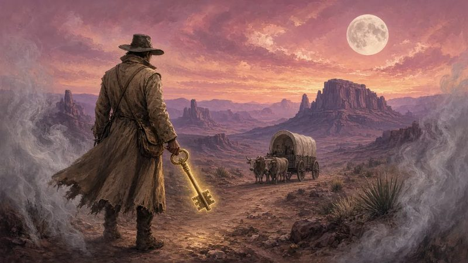
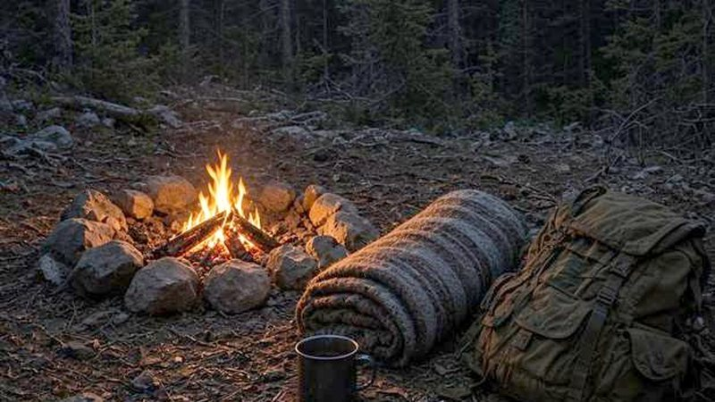
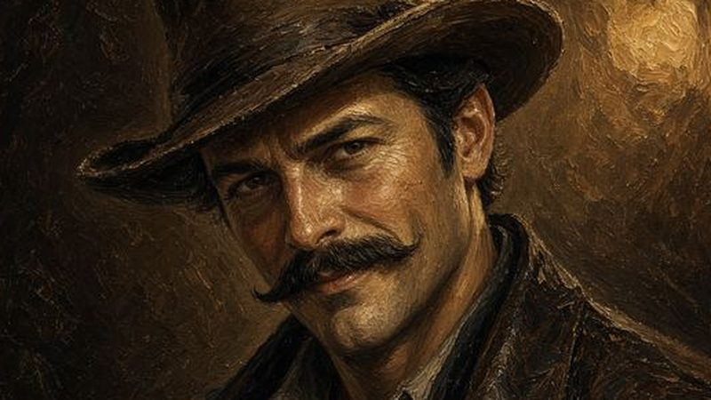
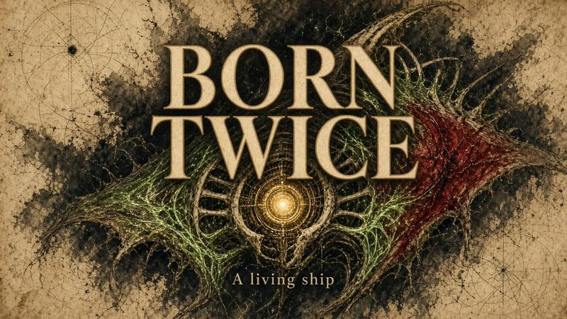
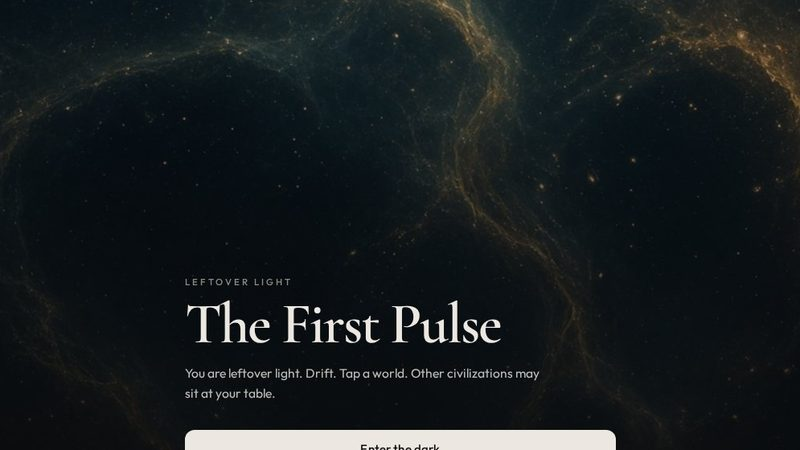
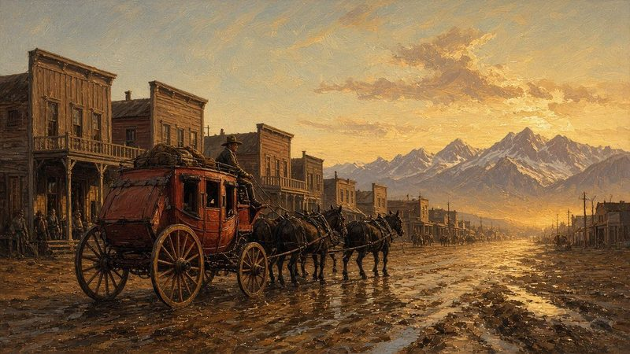
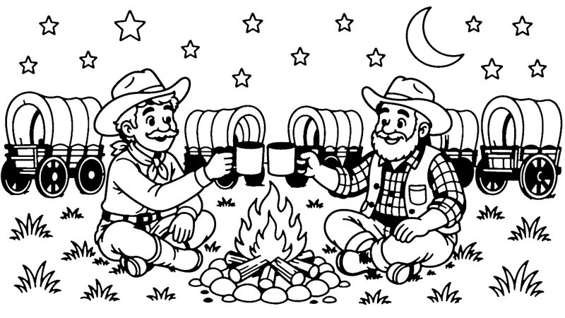

Play
Pick a game. Every one is free.

Jang & Tom ride alongBook WorldsWalk the California Trail as the Keeper, a drifter with a brass skeleton key. Tune the broadcast cabinet and push back the Nonimaginaires leaking into the story.▶ Play
A horror hunt · for older playersOld Man HuntSeven days on the mountain, based on the novel. Hang your trail cameras, keep the fire going and hold your nerve.▶ Play
Companion game · Wagon MastersJang & Tom: The Wagon TrainLead the wagon train yourself: oxen, debt collectors, Billy the goat and a wagon that lost a fight with a tornado. The book is the prize in Sacramento.▶ Play · opens in a new tab Companion game · airship adventureThe Rusty StackDocks, a chained fortress, Crimson Fang interceptors and a rust-bucket airship that looks half-dead on purpose. Found in the same game hub as Jang & Tom.▶ Play · opens in a new tab
Companion game · airship adventureThe Rusty StackDocks, a chained fortress, Crimson Fang interceptors and a rust-bucket airship that looks half-dead on purpose. Found in the same game hub as Jang & Tom.▶ Play · opens in a new tab

Thorne’s Lab · companion gameBorn TwiceGrow a living starship in a 1982 laboratory, then fly it across a real solar chart. Some vessels work. Some wake up hungry.▶ Play · opens in a new tab
Companion gameThe First PulseYou are leftover light. Drift, tap a world, and step inside the universe of The First Pulse.▶ Play · opens in a new tab
Picture gameI SpyFind five hidden things in scenes from the books. Good for all ages.▶ Play
Color the pagesColoringPick a picture from the books, pick a color and tap to fill. Print them too.▶ PlayThe book is the prize. Home
If the trail was worth it — tip the trail boss.